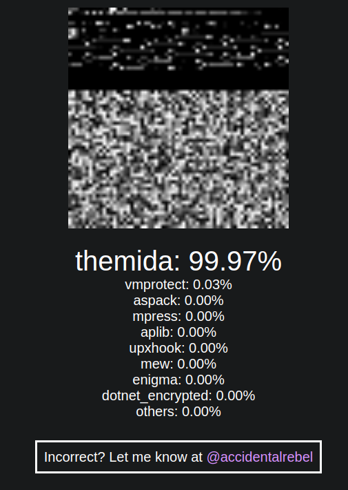

Classifying Malware Packers Using Machine Learning
The recent rise in popularity of AI reignited my interest in machine learning. It inspired me to dive deeper into understanding how it can be applied to malware analysis and, more importantly, how to better detect malware packers, as almost every malware nowadays uses them.
My research and experiments eventually led me to make a web app, which I call the VGL4NT Malware Packer Classifier (https://packers.vgl4nt.com/).).

(For those curious, V.G.L.4.N.T. is a play on "Vigilant" and stands for "Visual Guided Learning 4 Neutralizing Threats")
Current State of Packer Detection
Traditional packer detection approaches like DiE (Detect it Easy) and Yara rules depend on known signatures and patterns to identify packers. These tools scrutinize a file for specific indicators, like unique sequences of bytes or strings. While effective in many cases, they have drawbacks, like when a packer is modified or if the sequence of bytes or strings are altered.
By using machine learning, the VGL4NT Malware Packer Classifier can be able to take into account minute differences and still be able to detect the packer used.
How it works
- The uploaded executable file's bytes are converted into grayscale values, creating an image..
- The grayscale image is then fed into an image machine-learning model I trained from scratch.
- It returns a list of percentages on how similar it is to other Packers.

The approach above is nothing new and is based on this academic paper. The difference is that the paper has a tool that classifies malware families, while mine classifies the packers used.
Most of the magic happens in the model itself. I've trained it on several packed malware samples and measured its accuracy using multiple iterations. The latest version of this model has a 94% accuracy, which is calculated by comparing the model's predictions to the actual packer labels in a dataset that the model hasn't seen before (the test dataset).
Current limitations
The app works for the most part, but it has its limitations. For example, users can only upload executable files (EXE, Bin, ELF, DLLs, etc) with a maximum size limit of 10MB.
Furthermore, due to costs of GPU resources during training, only the following packer tools can be classified:
- mew
- dotnet_encrypted
- aspack
- enigma
- mpress
- themida
- vmprotect
- upx
- aplib
The list of packer tools above was chosen based on available real-world malware samples that I have encountered or studied.
Future Plans and Updates
If this project gains enough interest, then I plan to add more improvements, such as:
- Increase GPU resources to increase the model's capacity to classify more categories
- Improvements in the training method by handpicking the most important parts of the executable and then feeding that to the model
- Offer an API for integration with existing tools and processes.
Of course, this project would improve a lot with the community's help. I encourage users to provide feedback, report issues, or request new features. Feel free to throw your thoughts to me through my email, karlo@accidentalrebel.com, or Twitter at @accidentalrebel.